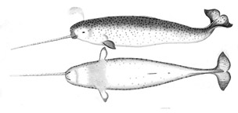

The narwhal, or narwhale (Monodon monoceros), is a medium-sized toothed whale and the animal with the largest canine teeth.
Narwhals live year-round in the Arctic. One of two living species of whale in the Monodontidae family, along with the beluga whale, narwhal males are distinguished by a long, straight, helical tusk, actually an elongated upper left canine. Found primarily in Canadian Arctic and Greenlandic waters, rarely south of 65°N latitude, the narwhal is a uniquely specialized Arctic predator. In the winter, it feeds on benthic prey, mostly flatfish, at depths of up to 1500 m under dense pack ice. Narwhals have been harvested for over a thousand years by Inuit people in northern Canada and Greenland for meat and ivory, and a regulated subsistence hunt continues to this day.
Source: Wikipedia's page on Narwhals